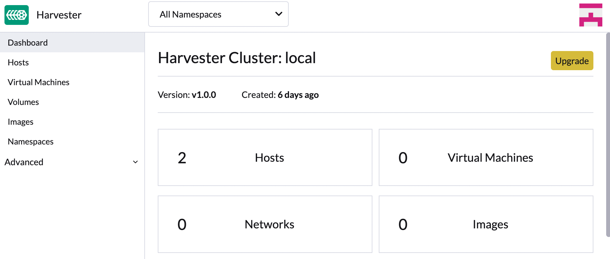
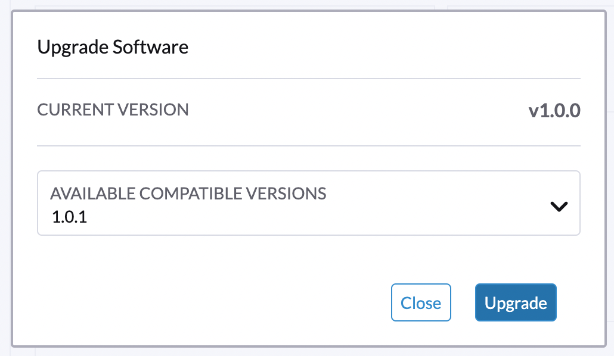

Actualizaciones
SUSE Virtualization está adoptando una nueva estrategia de ciclo de vida que simplifica la gestión de versiones y actualizaciones. Esta estrategia incluye lo siguiente:
-
Cadencia de lanzamiento menor de cuatro meses
-
Cadencia de lanzamiento de parches de dos meses
-
Política de adopción de componentes
|
SUSE Virtualization no admite retrocesos. Esta restricción ayuda a prevenir comportamientos inesperados del sistema y problemas asociados con la incompatibilidad de funciones, la obsolescencia y la eliminación. |
Opciones de actualización
La siguiente tabla describe las rutas de actualización compatibles.
| Versión instalada | Versiones de actualización soportadas |
|---|---|
v1.6.x |
|
v1.6.x |
v1.6.y (y es mayor que x) |
v1.5.x |
|
v1.5.0 y v1.5.1 |
|
v1.5.0 |
|
v1.4.2 y v1.4.3 |
|
v1.4.2 y v1.4.3 |
|
v1.4.1 y v1.4.2 |
|
v1.4.1 |
|
v1.4.0 |
|
v1.3.1 |
|
v1.2.2 y v1.3.0 |
|
v1.2.1 |
|
v1.1.2, v1.1.3 y v1.2.0 |
Las últimas SUSE Virtualization versiones permiten lo siguiente:
-
Actualizar de una versión menor a la siguiente (por ejemplo, de v1.5.2 a v1.6.1) sin necesidad de instalar los parches lanzados entre las dos versiones. Esto es posible porque SUSE Virtualization permite un máximo de una actualización de versión menor para los componentes subyacentes.
-
Actualizar a una versión de parche posterior (por ejemplo, de v1.6.0 a v1.6.1), asumiendo que se utilizan las mismas versiones de componentes en todas las publicaciones correspondientes a una misma versión menor.
La siguiente tabla detalla los componentes utilizados en estas versiones:
| Componente | SUSE Virtualization v1.5.x | SUSE Virtualization v1.6.x | SUSE Virtualization v1.7.x |
|---|---|---|---|
KubeVirt |
v1.4 |
v1.5 |
v1.6 |
SUSE Storage |
v1.8 |
v1.9 |
v1.10 |
SUSE Rancher Prime |
v2.11 |
v2.12 |
v2.13 |
RKE2 |
v1.32 |
v1.33 |
v1.34 |
SUSE Linux Micro |
5.5 |
5.5 |
6.1 |
|
Saltar múltiples versiones menores de Kubernetes no está soportado en sentido ascendente y es una razón clave detrás de las rutas de actualización limitadas. Para más información, consulta Política de Desviación de Versiones en la documentación de Kubernetes. |
Rancher actualización
Si estás utilizando Rancher para gestionar tu clúster de SUSE Virtualization, debes actualizar Rancher antes de actualizar SUSE Virtualization.
|
Los procesos de actualización de SUSE Virtualization y Rancher son independientes entre sí. Durante una actualización de Rancher, aún puedes acceder a tu clúster de SUSE Virtualization utilizando su IP virtual. SUSE Virtualization no se actualiza automáticamente. |
Cuando una versión de Rancher alcanza su fecha de Fin de Mantenimiento (EOM), SUSE Virtualization solo proporciona correcciones para problemas críticos relacionados con la seguridad que afectan a las funciones de integración (Gestión de Virtualización). Para más información, consulta el Matriz de Soporte.
Gestión de Máquinas Virtuales a través de la Actualización
Máquinas Virtuales Migrables en Vivo
Máquinas virtuales migrables en vivo son migradas automáticamente a otros nodos a través de migración por lotes antes de que el nodo actual sea actualizado. Estas máquinas virtuales experimentan cero tiempo de inactividad durante la migración.
Máquinas Virtuales No Migrables
Cuando se activa una actualización, SUSE Virtualization realiza ciertas acciones dependiendo del valor de la opción upgrade-config de la configuración restoreVM.
-
false: SUSE Virtualization no realiza la actualización cuando máquinas virtuales no migrables aún están en funcionamiento. Debes apagar manualmente las máquinas virtuales. -
true: SUSE Virtualization apaga automáticamente las máquinas virtuales no migrables cuando se actualiza el nodo y luego las restaura después de reiniciar el nodo.
|
Las máquinas virtuales no migrables experimentan tiempo de inactividad durante la migración. |
Para obtener más información, consulte Fase 4: Actualizar nodos.
Antes de iniciar una actualización
Consulta la upgrade-config configuración disponible para ajustar las estrategias y comportamientos de actualización que mejor se adapten a tu entorno de clúster.
Iniciar una actualización
|
|
|
Las NIC que se conectan a un puente PCI pueden ser renombradas tras una actualización. Por favor, consulta el artículo de la base de conocimientos para más información. |
|
A partir de la v1.7.0, SUSE Virtualization utiliza un repositorio de actualizaciones basado en despliegues en lugar de un enfoque basado en máquinas virtuales para mejorar el rendimiento y la fiabilidad. Para más información, consulta el problema #7101. |
-
En la pantalla SUSE Virtualization UI Panel de control, haz clic en Actualizar.
El botón Actualizar aparece siempre que hay una nueva versión a la que puedes actualizar.
Si tu entorno no tiene acceso directo a Internet, sigue las instrucciones en [Prepare an air-gapped upgrade], que proporciona un enfoque eficiente para descargar el ISO.

-
Selecciona la versión a la que deseas actualizar.
Si necesitas personalizaciones, consulta [Customize the version].

-
Haz clic en el indicador de progreso (icono circular) para ver el estado de cada proceso relacionado.

Personaliza la versión
-
Descarga el archivo de versión (
https://releases.rancher.com/harvester/{version}/version.yaml).Ejemplo:
El archivo de versión v1.5.0 se descarga como
v1.5.0.yaml.apiVersion: harvesterhci.io/v1beta1 kind: Version metadata: name: v1.5.0-customized # Changed, to avoid duplicated with the official version name namespace: harvester-system spec: isoChecksum: 'df28e9bf8dc561c5c26dee535046117906581296d633eb2988e4f68390a281b6856a5a0bd2e4b5b988c695a53d0fc86e4e3965f19957682b74317109b1d2fe32' # Don't change isoURL: https://releases.rancher.com/harvester/v1.5.0/harvester-v1.5.0-amd64.iso # Official ISO path by default releaseDate: '20250425' -
Crea la versión utilizando el comando
kubectl create -f v1.5.0.yaml.
Prepara una actualización en entorno aislado
|
Asegúrate de consultar primero la sección [Upgrade paths] sobre versiones actualizables. |
Prepara el archivo ISO
-
Descarga un archivo ISO de la página de Releases.
-
Guarda el ISO en un servidor HTTP local.
Asume que el archivo está alojado en
http://10.10.0.1/harvester.iso.
Prepara la Versión
-
Descarga el archivo de versión (
https://releases.rancher.com/harvester/{version}/version.yaml). -
Reemplaza el valor de
isoURLen el archivo.apiVersion: harvesterhci.io/v1beta1 kind: Version metadata: name: v1.5.0 namespace: harvester-system spec: isoChecksum: <SHA-512 checksum of the ISO> isoURL: http://10.10.0.1/harvester.iso # change to local ISO URL releaseDate: '20250425'Asume que el archivo está alojado en
http://10.10.0.1/version.yaml. Si necesitas personalizaciones, consulta [Customize the version]. -
Accede a uno de los nodos del plano de control a través de SSH e inicia sesión utilizando la cuenta [root].
-
Crea un objeto de versión.
rancher@node1:~> sudo -i rancher@node1:~> kubectl create -f http://10.10.0.1/version.yaml
Inicia manualmente una actualización antes de que la actualización oficial esté disponible
El botón Actualizar no aparece en la interfaz de usuario inmediatamente después de que se lanza una nueva versión. Si deseas actualizar tu clúster antes de que la opción esté disponible en la interfaz de usuario, sigue los pasos en [Prepare an air-gapped upgrade].
|
En entornos de producción, se recomienda actualizar clústeres a través de la interfaz de usuario. |
Personaliza las actualizaciones de nodos
Las actualizaciones de SUSE Virtualization implican varias fases definidas. Una fase clave son las actualizaciones de nodos, durante las cuales el sistema operativo y la distribución subyacente de Kubernetes (RKE2) se actualizan en cada nodo de forma secuencial y autónoma.
Tienes la opción de pausar la actualización de versión automática en nodos específicos, útil para tareas de mantenimiento manual o verificación. Tras la finalización de estas tareas, debes instruir explícitamente a SUSE Virtualization para reanudar la actualización de versión en los nodos de destino.
Pausando actualización de versión de nodos
Puedes usar la opción nodeUpgradeOption en la configuración upgrade-config para pausar la actualización de versión de los nodos.
-
Pausar para todos los nodos en el clúster: Cambia el valor del campo
modeamanual. -
Pausar para nodos específicos: Lista los nombres de los nodos en el campo
pauseNodes. Los nodos no incluidos en la lista se actualizan de versión automáticamente.
|
SUSE Virtualization aplica la configuración |
|
Puedes modificar el recurso personalizado |
La interfaz de usuario SUSE Virtualization proporciona confirmación visual de las actualizaciones de versión de nodos en pausa. En el siguiente ejemplo, la actualización de versión del nodo charlie-1-tink-system está actualmente en pausa.

También puedes usar el siguiente comando kubectl para comprobar las actualizaciones de versión de nodos en pausa.
$ kubectl -n harvester-system get upgrades -l harvesterhci.io/latestUpgrade=true -o yaml
...
annotations:
harvesterhci.io/node-upgrade-pause-map: '{"charlie-1-tink-system":"pause","charlie-2-tink-system":"pause","charlie-3-tink-system":"pause"}'
...
nodeStatuses:
charlie-1-tink-system:
message: Node upgrade paused as requested by the user
reason: AdministrativelyPaused
state: Node-upgrade paused
charlie-2-tink-system:
state: Images preloaded
charlie-3-tink-system:
state: Images preloaded
...|
Los trabajos de pre-drain para nodos con actualizaciones de versión en pausa no se han creado. Sin embargo, esos nodos siguen cordonados y no podrás ejecutar nuevas cargas de trabajo en ellos. Solo se deben realizar tareas de mantenimiento, como apagar manualmente máquinas virtuales, en nodos con actualizaciones de versión en pausa. |
Reanudando una actualización de versión de nodo en pausa
Puedes reanudar una actualización de versión de nodo en pausa actualizando la anotación harvesterhci.io/node-upgrade-pause-map en el recurso personalizado Upgrade.
Ejemplo:
# Find out the latest Upgrade custom resource
$ kubectl -n harvester-system get upgrades -l harvesterhci.io/latestUpgrade=true
NAME AGE
hvst-upgrade-6mcwv 4h16m
# Update the annotation to unpause the node
$ kubectl -n harvester-system annotate --overwrite upgrades hvst-upgrade-6mcwv harvesterhci.io/node-upgrade-pause-map='{"charlie-1-tink-system":"unpause","charlie-2-tink-system":"pause","charlie-3-tink-system":"pause"}'Una vez que el nodo objetivo esté anotado en el recurso personalizado Upgrade, SUSE Virtualization reanuda la actualización de versión de inmediato y la interfaz de usuario muestra actualizaciones visuales de progreso.

También puedes usar el siguiente comando kubectl para comprobar el estado del nodo objetivo:
$ kubectl -n harvester-system get upgrades -l harvesterhci.io/latestUpgrade=true -o yaml
...
annotations:
harvesterhci.io/node-upgrade-pause-map: '{"charlie-1-tink-system":"unpause","charlie-2-tink-system":"pause","charlie-3-tink-system":"pause"}'
...
nodeStatuses:
charlie-1-tink-system:
state: Pre-draining
charlie-2-tink-system:
state: Images preloaded
charlie-3-tink-system:
state: Images preloaded
...Dependiendo del número de nodos objetivo, es posible que necesites ejecutar la operación de reanudación varias veces durante el proceso de actualización de versión del clúster en general.
Requisito de espacio libre en la partición del sistema
SUSE Virtualization carga imágenes en cada nodo durante las actualizaciones de versión. Cuando el uso del disco excede el umbral de recolección de basura del kubelet, el kubelet elimina imágenes no utilizadas para liberar espacio. Esto puede causar problemas en entornos aislados porque las imágenes no están disponibles en el nodo.
SUSE Virtualization incluye comprobaciones que aseguran que los nodos no desencadenen la recolección de basura después de cargar nuevas imágenes.
Cuando el espacio en disco es insuficiente, SUSE Virtualization bloquea la actualización de versión y devuelve un error similar al siguiente:
Node "harvester-node-0" will reach 92.84% storage space after loading new images. It's higher than kubelet image garbage collection threshold 85%.Si deseas intentar actualizar versión incluso si el espacio libre en la partición del sistema es insuficiente en algunos nodos, puedes actualizar la anotación harvesterhci.io/skipGarbageCollectionThresholdCheck: true del objeto Upgrade.
apiVersion: harvesterhci.io/v1beta1
kind: Upgrade
metadata:
annotations:
harvesterhci.io/skipGarbageCollectionThresholdCheck: true
generateName: hvst-upgrade-
namespace: harvester-system
spec:
version: "1.6.0"
logEnabled: true|
Establecer un valor menor que el valor predefinido puede hacer que la actualización falle y no se recomienda en un entorno de producción. |
Las siguientes secciones describen soluciones para problemas relacionados con este requisito.
Liberar espacio en la partición del sistema manualmente
SUSE Virtualization intenta eliminar imágenes de contenedor innecesarias después de que se completa una actualización. Sin embargo, esta limpieza automática de imágenes puede no realizarse por diversas razones. Puedes usar un script para eliminar imágenes manualmente. Para obtener más información, consulta el problema #6620.
Configura un registro de contenedores privado y omite la precarga de imágenes
La partición del sistema puede seguir sin espacio libre incluso después de eliminar imágenes. Para abordar esto, configura un registro de contenedores privado tanto para las imágenes actuales como para las nuevas, y configura la opción upgrade-config con el siguiente valor:
{"imagePreloadOption":{"strategy":{"type":"skip"}}, "restoreVM": false}SUSE Virtualization omite el proceso de precarga de la imagen de actualización. Cuando se actualizan las ampliaciones en los nodos, el entorno de ejecución de contenedor carga las imágenes almacenadas en el registro de contenedores privado.
|
No confíes en el registro de contenedores público. Ten en cuenta cualquier posible interrupción del servicio de Internet y cuán cerca estás de alcanzar tu límite de tasa de Docker Hub. La falta de descarga de cualquiera de las imágenes requeridas puede causar que la actualización falle y puede dejar el clúster en un estado intermedio. |
Comprobación de la expiración de certificados
SUSE Virtualization comprueba el período de validez de los certificados en cada nodo. Esta comprobación elimina la posibilidad de que los certificados expiren mientras la actualización está en progreso. Si un certificado va a expirar en 7 días, se devuelve un error. Este comportamiento puede ser anulado configurando la anotación harvesterhci.io/minCertsExpirationInDay.
Ejemplo:
apiVersion: harvesterhci.io/v1beta1
kind: Upgrade
metadata:
annotations:
harvesterhci.io/minCertsExpirationInDay: "14"
generateName: hvst-upgrade-
namespace: harvester-system
spec:
version: "1.6.0"
logEnabled: trueCuando se añade esta anotación al objeto Upgrade, SUSE Virtualization devuelve un error cuando detecta un certificado que va a expirar en 14 días.
Para más información, consulta auto-rotate-rke2-certs.
Compatibilidad con copias de seguridad de máquinas virtuales
Puedes encontrar ciertas limitaciones al crear y restaurar copias de seguridad que implican almacenamiento externo.
Los bloqueos del gestor de Longhorn debido a la expulsión de la imagen de respaldo
|
Al actualizar a SUSE Virtualization v1.4.x, el gestor de Longhorn puede bloquearse si la bandera Para evitar que ocurra el problema, asegúrate de que la bandera |
Vuelve a habilitar los webhooks de admisión de ingress-nginx de RKE2 (CVE-2025-1974)
Si has deshabilitado los webhooks de admisión de ingress-nginx de RKE2 para mitigar CVE-2025-1974, debes volver a habilitar el webhook después de actualizar a SUSE Virtualization v1.5.0 o posterior.
-
Verifica que SUSE Virtualization esté utilizando nginx-ingress v1.12.1 o posterior.
$ kubectl -n kube-system get po -l"app.kubernetes.io/name=rke2-ingress-nginx" -ojsonpath='{.items[].spec.containers[].image}' rancher/nginx-ingress-controller:v1.12.1-hardened1 -
Ejecuta
kubectl -n kube-system edit helmchartconfig rke2-ingress-nginxpara eliminar las siguientes configuraciones del recursoHelmChartConfig.-
.spec.valuesContent.controller.admissionWebhooks.enabled: false -
.spec.valuesContent.controller.extraArgs.enable-annotation-validation: true
-
-
Verifica que la nueva configuración de
.spec.ValuesContentsea similar al siguiente ejemplo.apiVersion: helm.cattle.io/v1 kind: HelmChartConfig metadata: name: rke2-ingress-nginx namespace: kube-system spec: valuesContent: |- controller: admissionWebhooks: port: 8444 extraArgs: default-ssl-certificate: cattle-system/tls-rancher-internal config: proxy-body-size: "0" proxy-request-buffering: "off" publishService: pathOverride: kube-system/ingress-exposeSi el recurso
HelmChartConfigcontiene otra configuración personalizada deingress-nginx, debes conservarla al editar el recurso. -
Sal de la ejecución del comando
kubectl editpara guardar la configuración.SUSE Virtualization aplica automáticamente el cambio una vez que se guarda el contenido.
-
Verifica que la configuración del webhook de
rke2-ingress-nginx-admissionse haya vuelto a habilitar.$ kubectl get validatingwebhookconfiguration rke2-ingress-nginx-admission NAME WEBHOOKS AGE rke2-ingress-nginx-admission 1 6s -
Verifica que los pods de
ingress-nginxse reinicien correctamente.kubectl -n kube-system get po -lapp.kubernetes.io/instance=rke2-ingress-nginx NAME READY STATUS RESTARTS AGE rke2-ingress-nginx-controller-l2cxz 1/1 Running 0 94s
La actualización está atascada en el estado "Pre-drained"
El proceso de actualización puede quedar atascado en el estado "Pre-drained". Se supone que Kubernetes debe drenar la carga de trabajo en el nodo, pero algunos factores pueden causar que el proceso se detenga.

Una posible causa son los procesos relacionados con motores huérfanos del Longhorn Instance Manager. Para determinar si esto se aplica a tu situación, realiza los siguientes pasos:
-
Verifica el nombre del pod
instance-manageren el nodo atascado.Ejemplo:
El nodo atascado es
harvester-node-1, y el nombre del pod del Instance Manager esinstance-manager-d80e13f520e7b952f4b7593fc1883e2a.$ kubectl get pods -n longhorn-system --field-selector spec.nodeName=harvester-node-1 | grep instance-manager instance-manager-d80e13f520e7b952f4b7593fc1883e2a 1/1 Running 0 3d8h -
Revisa los registros del Longhorn Manager en busca de mensajes informativos.
Ejemplo:
$ kubectl -n longhorn-system logs daemonsets/longhorn-manager ... time="2025-01-14T00:00:01Z" level=info msg="Node instance-manager-d80e13f520e7b952f4b7593fc1883e2a is marked unschedulable but removing harvester-node-1 PDB is blocked: some volumes are still attached InstanceEngines count 1 pvc-9ae0e9a5-a630-4f0c-98cc-b14893c74f9e-e-0" func="controller.(*InstanceManagerController).syncInstanceManagerPDB" file="instance_manager_controller.go:823" controller=longhorn-instance-manager node=harvester-node-1El pod
instance-managerno puede ser drenado debido al motorpvc-9ae0e9a5-a630-4f0c-98cc-b14893c74f9e-e-0. -
Verifica si el motor sigue funcionando en el nodo atascado.
Ejemplo:
$ kubectl -n longhorn-system get engines.longhorn.io pvc-9ae0e9a5-a630-4f0c-98cc-b14893c74f9e-e-0 -o jsonpath='{"Current state: "}{.status.currentState}{"\nNode ID: "}{.spec.nodeID}{"\n"}' Current state: stopped Node ID:El problema probablemente existe si la salida muestra que el motor no está en funcionamiento o no se encuentra.
-
Verifica si todos los volúmenes están saludables.
kubectl get volumes -n longhorn-system -o yaml | yq '.items[] | select(.status.state == "attached")| .status.robustness'Todos los volúmenes deben estar marcados
healthy. Si este no es el caso, informa del problema. -
Elimina el PodDisruptionBudget (PDB) del pod
instance-manager.Ejemplo:
kubectl delete pdb instance-manager-d80e13f520e7b952f4b7593fc1883e2a -n longhorn-system
Problemas relacionados:
Migración en vivo fallida en el estado "Pre-drained"
La migración en vivo de máquinas virtuales puede fallar cuando el nodo en actualización está cordonado durante el estado "Pre-drained". Una causa común es la falta de nodos de destino compatibles debido a estrictas reglas de anti-afinidad.
Cuando esto sucede, SUSE Virtualization apaga automáticamente estas máquinas virtuales para desbloquear la actualización y evitar que el proceso se reinicie de manera insegura.
Las instantáneas y copias de seguridad SUSE Storage recurrentes no son compatibles
Las instantáneas y copias de seguridad SUSE Storage recurrentes no están integradas en SUSE Virtualization. Si decides utilizar esta función, debes desactivar todos los trabajos de instantáneas y copias de seguridad recurrentes en SUSE Storage antes de comenzar la actualización.
Para más información sobre la incompatibilidad, consulta Copias de seguridad y instantáneas programadas de máquinas virtuales.